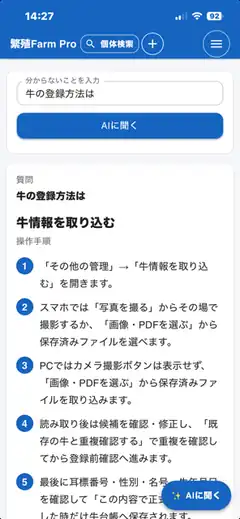

今
今が分かる
牛ごとの繁殖状況、治療履歴、子牛の状態を確認。
農家が作った、農家のための農場管理アプリ。
紙の記録から、FarmProへ。個体・繁殖・治療・子牛・予定・経営をまとめて管理。
今の状態と、次にやることが分かります。
繁殖雌牛10頭まで無料。クレジットカード不要。
「牛の登録方法は？」「この画面は何をするところ？」のように入力すると、FarmProの使い方を画面に合わせて案内します。
牛ごとの繁殖状況、治療履歴、子牛の状態を確認。
近日の対応や予定から、次に見る牛・次にする作業を確認。
要対応の牛を埋もれさせず、優先して確認できます。
売上・経費・収支をまとめて、農場全体の状況を確認。
発情、人工授精、受精卵移植（ET）、妊娠鑑定、分娩までを個体に紐づけて記録。過去の履歴と次の予定をつなげます。
牛台帳、子牛管理、成長記録。
治療履歴、投薬、休薬情報。
飼料在庫、給与量、個体別原価。
販売、生産費、月別収支、経営確認。

PCでは一覧を大きく確認。スマホでは現場ですぐ記録・確認。FarmProを同じ考え方で使えます。
はい。FreeでもFarmProの使い方・設定・画面操作をAIに質問できます。
ありません。AIは操作案内や確認を補助する役割で、正式な記録を勝手に変更・確定しません。
繁殖雌牛10頭までなら、期間の制限なく無料で利用できます。
なりません。有料プランを使う場合は、ご自身で申し込み手続きを行います。
主な違いは登録できる繁殖雌牛の頭数です。Standardは11〜50頭、Proは51頭以上です。